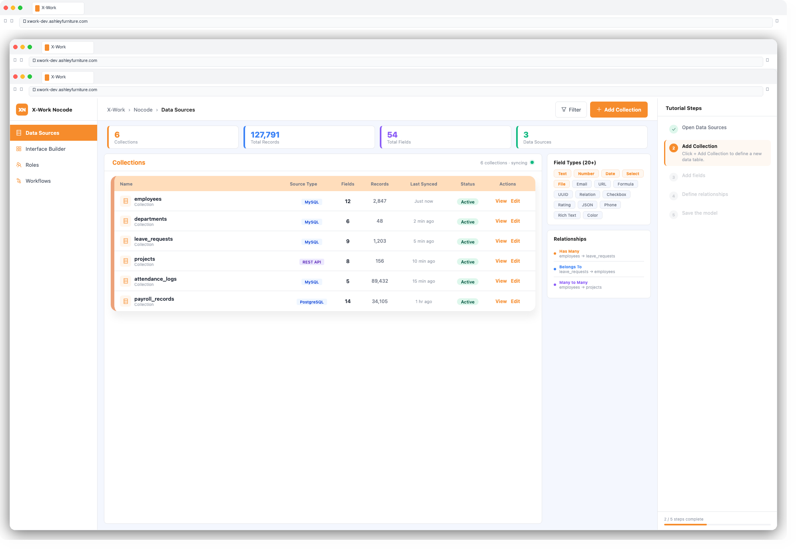
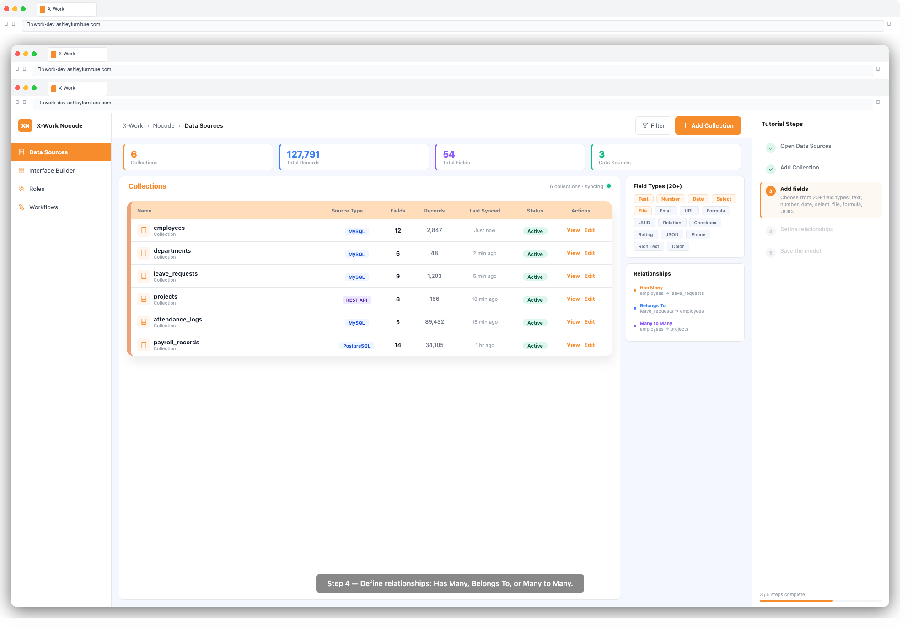

X-Work — User Guide: Data Sources
Overview
The Data Sources module is the foundation of every X-Work application. It lets you connect to databases or external APIs, define the shape of your data (collections and fields), and set up relationships between data entities — all without writing SQL or code.
Key Concepts
| Term | Meaning |
|---|---|
| Data Source | A connection to a database, API, or data system |
| Collection | A table or resource within a data source (equivalent to a database table) |
| Field | A column within a collection, with a defined type and rules |
| Relationship | A link between two collections (e.g. Orders → Customers) |
Step 1: Access Data Sources
1. Log in to X-Work
2. In the left navigation, click Settings → Data Sources
3. You will see a list of existing data sources (the main database is pre-configured)
Step 2: Connect a New Data Source
Option A — Main Database (MySQL)
The default X-Work database is connected automatically. You can create collections directly without additional setup.
Option B — External Database
1. Click + Add Data Source
2. Select the source type (e.g. MySQL, PostgreSQL)
3. Enter connection details: Host, Port, Database Name, Username, Password
4. Click Test Connection to verify
5. Click Save
Option C — REST API
1. Click + Add Data Source
2. Select REST API
3. Enter the base URL and authentication details (API key, Bearer token, or OAuth)
4. Define the resource endpoints
5. Click Save

Step 3: Create a Collection
1. Select your data source from the list
2. Click + Add Collection
3. Enter a Collection Name (e.g. projects, employees)
4. Click Confirm
Tip: Collection names use lowercase letters and underscores (e.g.
leave_requests).
Step 4: Add Fields
1. Open the collection and click + Add Field
2. Select a Field Type from the dropdown:
| Field Type | Use Case |
|---|---|
| Single Line Text | Short text values (name, title) |
| Long Text | Multi-line descriptions |
| Number | Integer or decimal values |
| Percentage | Numeric values displayed as % |
| Date & Time | Timestamps with optional time |
| Checkbox | Boolean true/false |
| Select | Single choice from a list |
| Multi-Select | Multiple choices |
| File | File uploads |
| Image | Image uploads |
| Email address | |
| URL | Web links |
| JSON | Structured JSON data |
| Formula | Computed value from other fields |
| Auto-increment | Automatically incrementing number |
| UUID | Globally unique identifier |

3. Configure field properties:
- Required: whether this field must be filled in
- Default value: pre-fill when creating a record
- Unique: ensure no duplicate values
4. Click OK to save the field
Step 5: Define Relationships
1. Click + Add Field and select a relationship type:
| Relationship | Meaning | Example |
|---|---|---|
| Has Many | One record has many related records | Department → Employees |
| Belongs To | This record belongs to one parent | Employee → Department |
| Has One | One record has exactly one related record | User → Profile |
| Many to Many | Both sides can have many of each other | Products ↔ Orders |

2. Select the Target Collection (the other side of the relationship)
3. Configure the Foreign Key field name
4. Click OK
Step 6: Sync Data (Optional)
If you need to synchronize data from an external source on a schedule:
1. Navigate to Settings → Data Sync
2. Click + New Sync Task
3. Select source and target collections
4. Configure the sync schedule (one-time or recurring cron)
5. Map fields between source and target
6. Click Start Sync
Tips & Best Practices
- Plan your data model first — sketch out collections and relationships on paper before building in X-Work
- Use descriptive field names —
customer_nameis clearer thannamewhen you have multiple collections - Set required fields — prevents incomplete records from being submitted
- Use relationships instead of duplicating data — link Employee to Department rather than storing department name on every employee record
- Test your connection before saving an external data source to catch network or credential issues early
Troubleshooting
| Issue | Solution |
|---|---|
| Connection test fails | Check host/port accessibility; verify credentials |
| Field not appearing in forms | Ensure the field is not set to hidden in the collection settings |
| Relationship not showing data | Verify the foreign key field is correctly mapped |
| Sync task not running | Check the cron schedule and confirm the task is enabled |